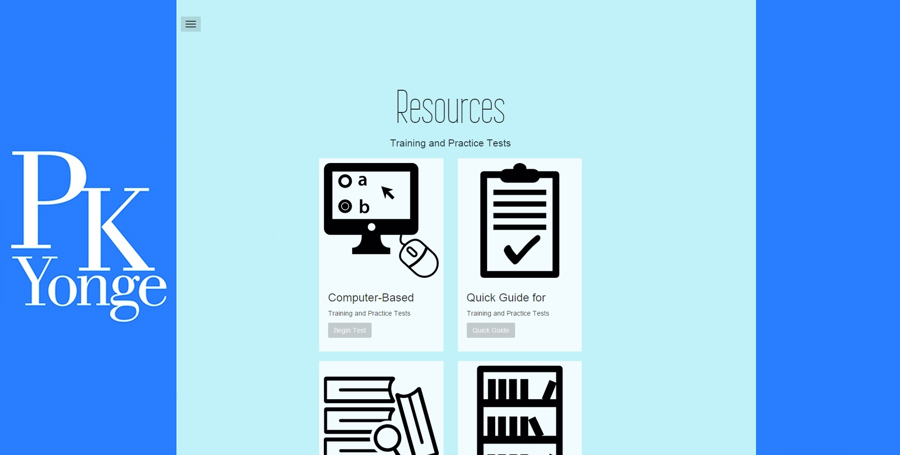

Accessing the Test
Where and how to take the practice EOC exam.
In order to access the test, please go to the main page of this website.

_
Once there, the test can be accessed either by pressing the large "Begin Practice Test" button on the homepage, or by using the menu on the upper-left to get to the "Resources" page and selecting "Begin Test."
_
It is important to note that the test is best and most easily taken using any modern web browser on a computer, as opposed to a phone or tablet device.